Ad Click Event Aggregation¶
With the rise of Facebook, YouTube, TikTok, and the online media economy, digital advertising is taking an ever-bigger share of the total advertising spending. As a result, tracking ad click events is very important. In this chapter, we explore how to design an ad click event aggregation system at Facebook or Google scale.
Before we dive into technical design, let’s learn about the core concepts of online advertising to better understand this topic. One core benefit of online advertising is its measurability, as quantified by real-time data.
Digital advertising has a core process called Real-Time Bidding (RTB), in which digital advertising inventory is bought and sold. Figure 1 shows how the online advertising process works.
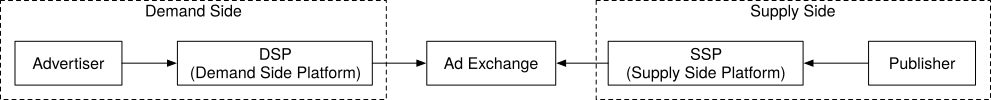
Figure 1 RTB process
The speed of the RTB process is important as it usually occurs in less than a second.
Data accuracy is also very important. Ad click event aggregation plays a critical role in measuring the effectiveness of online advertising, which essentially impacts how much money advertisers pay. Based on the click aggregation results, campaign managers can control the budget or adjust bidding strategies, such as changing targeted audience groups, keywords, etc. The key metrics used in online advertising, including click-through rate (CTR) [1] and conversion rate (CVR) [2], depend on aggregated ad click data.
Step 1 - Understand the Problem and Establish Design Scope¶
The following set of questions helps to clarify requirements and narrow down the scope.
Candidate: What is the format of the input data?
Interviewer: It’s a log file located in different servers and the latest click events are appended to the end of the log file. The event has the following attributes: ad_id, click_timestamp, user_id, ip, and country.
Candidate: What’s the data volume?
Interviewer: 1 billion ad clicks per day and 2 million ads in total. The number of ad click events grows 30% year-over-year.
Candidate: What are some of the most important queries to support?
Interviewer: The system needs to support the following 3 queries:
-
Return the number of click events for a particular ad in the last M minutes.
-
Return the top 100 most clicked ads in the past 1 minute. Both parameters should be configurable. Aggregation occurs every minute.
-
Support data filtering by ip, user_id, or country for the above two queries.
Candidate: Do we need to worry about edge cases? I can think of the following:
-
There might be events that arrive later than expected.
-
There might be duplicated events.
-
Different parts of the system might be down at any time, so we need to consider system recovery.
Interviewer: That’s a good list. Yes, take these into consideration.
Candidate: What is the latency requirement?
Interviewer: A few minutes of end-to-end latency. Note that latency requirements for RTB and ad click aggregation are very different. While latency for RTB is usually less than one second due to the responsiveness requirement, a few minutes of latency is acceptable for ad click event aggregation because it is primarily used for ad billing and reporting.
With the information gathered above, we have both functional and non-functional requirements.
Functional requirements¶
-
Aggregate the number of clicks of ad_id in the last M minutes.
-
Return the top 100 most clicked ad_id every minute.
-
Support aggregation filtering by different attributes.
-
Dataset volume is at Facebook or Google scale (see the back-of-envelope estimation section below for detailed system scale requirements).
Non-functional requirements¶
-
Correctness of the aggregation result is important as the data is used for RTB and ads billing.
-
Properly handle delayed or duplicate events.
-
Robustness. The system should be resilient to partial failures.
-
Latency requirement. End-to-end latency should be a few minutes, at most.
Back-of-the-envelope estimation¶
Let’s do an estimation to understand the scale of the system and the potential challenges we will need to address.
-
1 billion DAU.
-
Assume on average each user clicks 1 ad per day. That’s 1 billion ad click events per day.
-
Ad click QPS = 10^9 events / 10^5 seconds in a day = 10,000
-
Assume peak ad click QPS is 5 times the average number. Peak QPS = 50,000 QPS.
-
Assume a single ad click event occupies 0.1 KB storage. Daily storage requirement is: 0.1 KB * 1 billion = 100 GB. The monthly storage requirement is about 3 TB.
Step 2 - Propose High-Level Design and Get Buy-In¶
In this section, we discuss query API design, data model, and high-level design.
Query API design¶
The purpose of the API design is to have an agreement between the client and the server. In a consumer app, a client is usually the end-user who uses the product. In our case, however, a client is the dashboard user (data scientist, product manager, advertiser, etc.) who runs queries against the aggregation service.
Let’s review the functional requirements so we can better design the APIs:
-
Aggregate the number of clicks of ad_id in the last M minutes.
-
Return the top N most clicked ad_ids in the last M minute.
-
Support aggregation filtering by different attributes.
We only need two APIs to support those three use cases because filtering (the last requirement) can be supported by adding query parameters to the requests.
API 1: Aggregate the number of clicks of ad_id in the last M minutes.
| API | Detail |
|---|---|
| GET /v1/ads/{:ad_id}/aggregated_count | Return aggregated event count for a given ad_id |
Table 1 API for aggregating the number of clicks
Request parameters are:
| Field | Description | Type |
|---|---|---|
| from | Start minute (default is now minus 1 minute) | long |
| to | End minute (default is now) | long |
| filter | An identifier for different filtering strategies. For example, filter = 001 filters out non-US clicks | long |
Table 2 Request parameters for /v1/ads/{:ad_id}/aggregated_count
Response:
| Field | Description | Type |
|---|---|---|
| ad_id | The identifier of the ad | string |
| count | The aggregated count between the start and end minutes | long |
Table 3 Response for /v1/ads/{:ad_id}/aggregated_count
API 2: Return top N most clicked ad_ids in the last M minutes
| API | Detail |
|---|---|
| GET /v1/ads/popular_ads | Return top N most clicked ads in the last M minutes |
Table 4 API for /v1/ads/popular_ads
Request parameters are:
| Field | Description | Type |
|---|---|---|
| count | Top N most clicked ads | integer |
| window | The aggregation window size (M) in minutes | integer |
| filter | An identifier for different filtering strategies | long |
Table 5 Request parameters for /v1/ads/popular_ads
Response:
| Field | Description | Type |
|---|---|---|
| ad_ids | A list of the most clicked ads | array |
Table 6 Response for /v1/ads/popular_ads
Data model¶
There are two types of data in the system: raw data and aggregated data.
Raw data¶
Below shows what the raw data looks like in log files:
[AdClickEvent] ad001, 2021-01-01 00:00:01, user 1, 207.148.22.22, USA
Table 7 lists what the data fields look like in a structured way. Data is scattered on different application servers.
| ad_id | click_timestamp | user | ip | country |
|---|---|---|---|---|
| ad001 | 2021-01-01 00:00:01 | user1 | 207.148.22.22 | USA |
| ad001 | 2021-01-01 00:00:02 | user1 | 207.148.22.22 | USA |
| ad002 | 2021-01-01 00:00:02 | user2 | 209.153.56.11 | USA |
Table 7 Raw data
Aggregated data¶
Assume that ad click events are aggregated every minute. Table 8 shows the aggregated result.
| ad_id | click_minute | count |
|---|---|---|
| ad001 | 202101010000 | 5 |
| ad001 | 202101010001 | 7 |
Table 8 Aggregated data
To support ad filtering, we add an additional field called filter_id to the table. Records with the same ad_id and click_minute are grouped by filter_id as shown in Table 9, and filters are defined in Table 10.
| ad_id | click_minute | filter_id | count |
|---|---|---|---|
| ad001 | 202101010000 | 0012 | 2 |
| ad001 | 202101010000 | 0023 | 3 |
| ad001 | 202101010001 | 0012 | 1 |
| ad001 | 202101010001 | 0023 | 6 |
Table 9 Aggregated data with filters
| filter_id | region | IP | user_id |
|---|---|---|---|
| 0012 | US | * | * |
| 0013 | * | 123.1.2.3 | * |
Table 10 Filter table
To support the query to return the top N most clicked ads in the last M minutes, the following structure is used.
| most_clicked_ads | ||
|---|---|---|
| window_size | integer | The aggregation window size (M) in minutes |
| update_time_minute | timestamp | Last updated timestamp (in 1-minute granularity) |
| most_clicked_ads | array | List of ad IDs in JSON format. |
Table 11 Support top N most clicked ads in the last M minutes
Comparison¶
The comparison between storing raw data and aggregated data is shown below:
| Raw data only | Aggregated data only | |
|---|---|---|
| Pros | - Full data set - Support data filter and recalculation | - Smaller data set - Fast query |
| Cons | - Huge data storage - Slow query | - Data loss. This is derived data. For example, 10 entries might be aggregated to 1 entry |
Table 12 Raw data vs aggregated data
Should we store raw data or aggregated data? Our recommendation is to store both. Let’s take a look at why.
-
It’s a good idea to keep the raw data. If something goes wrong, we could use the raw data for debugging. If the aggregated data is corrupted due to a bad bug, we can recalculate the aggregated data from the raw data, after the bug is fixed.
-
Aggregated data should be stored as well. The data size of the raw data is huge. The large size makes querying raw data directly very inefficient. To mitigate this problem, we run read queries on aggregated data.
-
Raw data serves as backup data. We usually don’t need to query raw data unless recalculation is needed. Old raw data could be moved to cold storage to reduce costs.
-
Aggregated data serves as active data. It is tuned for query performance.
Choose the right database¶
When it comes to choosing the right database, we need to evaluate the following:
-
What does the data look like? Is the data relational? Is it a document or a blob?
-
Is the workflow read-heavy, write-heavy, or both?
-
Is transaction support needed?
-
Do the queries rely on many online analytical processing (OLAP) functions [3] like SUM, COUNT?
Let’s examine the raw data first. Even though we don’t need to query the raw data during normal operations, it is useful for data scientists or machine learning engineers to study user response prediction, behavioral targeting, relevance feedback, etc. [4].
As shown in the back of the envelope estimation, the average write QPS is 10,000, and the peak QPS can be 50,000, so the system is write-heavy. On the read side, raw data is used as backup and a source for recalculation, so in theory, the read volume is low.
Relational databases can do the job, but scaling the write can be challenging. NoSQL databases like Cassandra and InfluxDB are more suitable because they are optimized for write and time-range queries.
Another option is to store the data in Amazon S3 using one of the columnar data formats like ORC [5], Parquet [6], or AVRO [7]. We could put a cap on the size of each file (say, 10GB) and the stream processor responsible for writing the raw data could handle the file rotation when the size cap is reached. Since this setup may be unfamiliar for many, in this design we use Cassandra as an example.
For aggregated data, it is time-series in nature and the workflow is both read and write heavy. This is because, for each ad, we need to query the database every minute to display the latest aggregation count for customers. This feature is useful for auto-refreshing the dashboard or triggering alerts in a timely manner. Since there are two million ads in total, the workflow is read-heavy. Data is aggregated and written every minute by the aggregation service, so it’s write-heavy as well. We could use the same type of database to store both raw data and aggregated data.
Now we have discussed query API design and data model, let’s put together the high-level design.
High-level design¶
In real-time big data [8] processing, data usually flows into and out of the processing system as unbounded data streams. The aggregation service works in the same way; the input is the raw data (unbounded data streams), and the output is the aggregated results (see Figure 2).
Figure 2 Aggregation workflow
Asynchronous processing¶
The design we currently have is synchronous. This is not good because the capacity of producers and consumers is not always equal. Consider the following case; if there is a sudden increase in traffic and the number of events produced is far beyond what consumers can handle, consumers might get out-of-memory errors or experience an unexpected shutdown. If one component in the synchronous link is down, the whole system stops working.
A common solution is to adopt a message queue (Kafka) to decouple producers and consumers. This makes the whole process asynchronous and producers/consumers can be scaled independently.
Putting everything we have discussed together, we come up with the high-level design as shown in Figure 3. Log watcher, aggregation service, and database are decoupled by two message queues. The database writer polls data from the message queue, transforms the data into the database format, and writes it to the database.
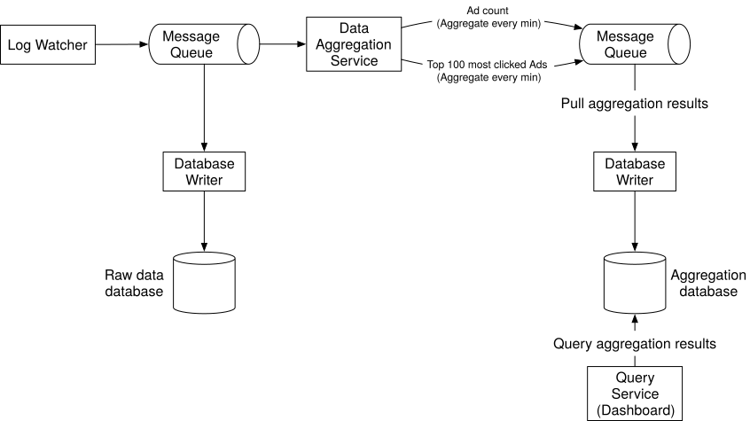
Figure 3 High-level design
What is stored in the first message queue? It contains ad click event data as shown in Table 13.
| ad_id | click_timestamp | user_id | ip | country |
|---|---|---|---|---|
Table 13 Data in the first message queue
What is stored in the second message queue? The second message queue contains two types of data:
- Ad click counts aggregated at per-minute granularity.
| ad_id | click_minute | count |
|---|---|---|
Table 14 Data in the second message queue
- Top N most clicked ads aggregated at per-minute granularity.
| update_time_minute | most_clicked_ads |
|---|---|
Table 15 Data in the second message queue
You might be wondering why we don’t write the aggregated results to the database directly. The short answer is that we need the second message queue like Kafka to achieve end-to-end exactly-once semantics (atomic commit).
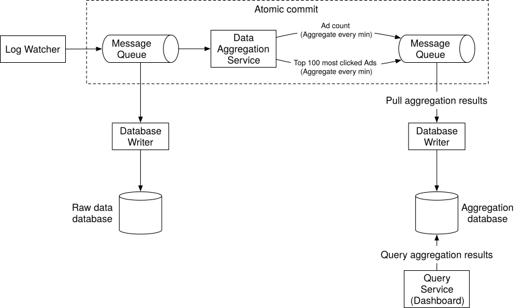
Figure 4: End-to-end exactly once
Next, let’s dig into the details of the aggregation service.
Aggregation service¶
The MapReduce framework is a good option to aggregate ad click events. The directed acyclic graph (DAG) is a good model for it [9]. The key to the DAG model is to break down the system into small computing units, like the Map/Aggregate/Reduce nodes, as shown in Figure 5.
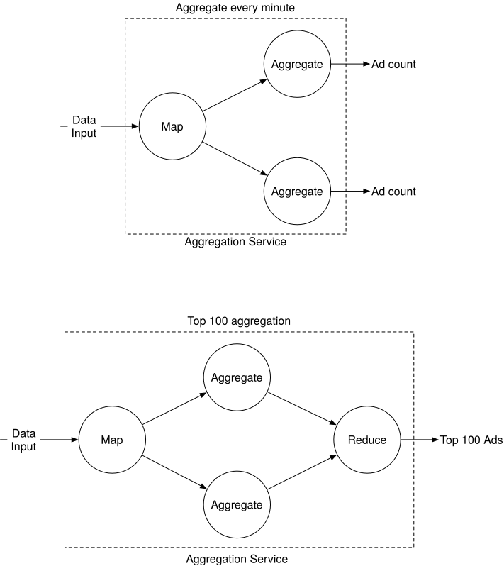
Figure 5 Aggregation service
Each node is responsible for one single task and it sends the processing result to its downstream nodes.
Map node
A Map node reads data from a data source, and then filters and transforms the data. For example, a Map node sends ads with ad_id % 2 = 0 to node 1, and the other ads go to node 2, as shown in Figure 6.
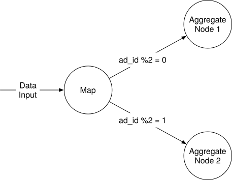
Figure 6 Map operation
You might be wondering why we need the Map node. An alternative option is to set up Kafka partitions or tags and let the aggregate nodes subscribe to Kafka directly. This works, but the input data may need to be cleaned or normalized, and these operations can be done by the Map node. Another reason is that we may not have control over how data is produced and therefore events with the same ad_id might land in different Kafka partitions.
Aggregate node
An Aggregate node counts ad click events by ad_id in memory every minute. In the MapReduce paradigm, the Aggregate node is part of the Reduce. So the map-aggregate-reduce process really means map-reduce-reduce.
Reduce node
A Reduce node reduces aggregated results from all “Aggregate” nodes to the final result. For example, as shown in Figure 7, there are three aggregation nodes and each contains the top 3 most clicked ads within the node. The Reduce node reduces the total number of most clicked ads to 3.
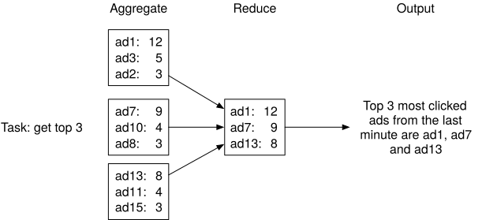
Figure 7 Reduce node
The DAG model represents the well-known MapReduce paradigm. It is designed to take big data and use parallel distributed computing to turn big data into little- or regular-sized data.
In the DAG model, intermediate data can be stored in memory and different nodes communicate with each other through either TCP (nodes running in different processes) or shared memory (nodes running in different threads).
Main use cases¶
Now that we understand how MapReduce works at the high level, let’s take a look at how it can be utilized to support the main use cases:
-
Aggregate the number of clicks of adid in the last _M mins.
-
Return top N most clicked adids in the last _M minutes.
-
Data filtering.
Use case 1: aggregate the number of clicks¶
As shown in Figure 8, input events are partitioned by ad_id (ad_id % 3) in Map nodes and are then aggregated by Aggregation nodes.
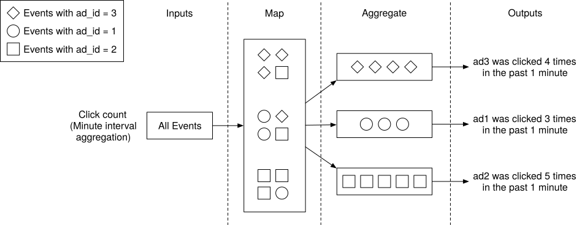
Figure 8 Aggregate the number of clicks
Use case 2: return top N most clicked ads¶
Figure 9 shows a simplified design of getting the top 3 most clicked ads, which can be extended to top N. Input events are mapped using ad_id and each Aggregate node maintains a heap data structure to get the top 3 ads within the node efficiently. In the last step, the Reduce node reduces 9 ads (top 3 from each aggregate node) to the top 3 most clicked ads every minute.
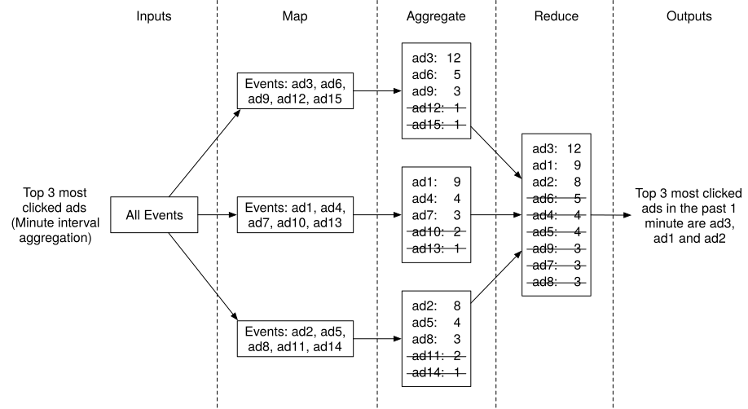
Figure 9 Return top N most clicked ads
Use case 3: data filtering¶
To support data filtering like “show me the aggregated click count for ad001 within the USA only”, we can pre-define filtering criteria and aggregate based on them. For example, the aggregation results look like this for ad001 and ad002:
| ad_id | click_minute | country | count |
|---|---|---|---|
| ad001 | 202101010001 | USA | 100 |
| ad001 | 202101010001 | GPB | 200 |
| ad001 | 202101010001 | others | 3000 |
| ad002 | 202101010001 | USA | 10 |
| ad002 | 202101010001 | GPB | 25 |
| ad002 | 202101010001 | others | 12 |
Table 16 Aggregation results (filter by country)
This technique is called the star schema [11], which is widely used in data warehouses. The filtering fields are called dimensions. This approach has the following benefits:
-
It is simple to understand and build.
-
The current aggregation service can be reused to create more dimensions in the star schema. No additional component is needed.
-
Accessing data based on filtering criteria is fast because the result is pre-calculated.
A limitation with this approach is that it creates many more buckets and records, especially when we have a lot of filtering criteria.
Step 3 - Design Deep Dive¶
In this section, we will dive deep into the following:
-
Streaming vs batching
-
Time and aggregation window
-
Delivery guarantees
-
Scale the system
-
Data monitoring and correctness
-
Final design diagram
-
Fault tolerance
Streaming vs batching¶
The high-level architecture we proposed in Figure 3 is a type of stream processing system. Table 17 shows the comparison of three types of systems [12]:
| Services (Online system) | Batch system (offline system) | Streaming system (near real-time system) | |
|---|---|---|---|
| Responsiveness | Respond to the client quickly | No response to the client needed | No response to the client needed |
| Input | User requests | Bounded input with finite size. A large amount of data | Input has no boundary (infinite streams) |
| Output | Responses to clients | Materialized views, aggregated metrics, etc. | Materialized views, aggregated metrics, etc. |
| Performance measurement | Availability, latency | Throughput | Throughput, latency |
| Example | Online shopping | MapReduce | Flink [13] |
Table 17 Comparison of three types of systems
In our design, both stream processing and batch processing are used. We utilized stream processing to process data as it arrives and generates aggregated results in a near real-time fashion. We utilized batch processing for historical data backup.
For a system that contains two processing paths (batch and streaming) simultaneously, this architecture is called lambda [14]. A disadvantage of lambda architecture is that you have two processing paths, meaning there are two codebases to maintain. Kappa architecture [15], which combines the batch and streaming in one processing path, solves the problem. The key idea is to handle both real-time data processing and continuous data reprocessing using a single stream processing engine. Figure 10 shows a comparison of lambda and kappa architecture.
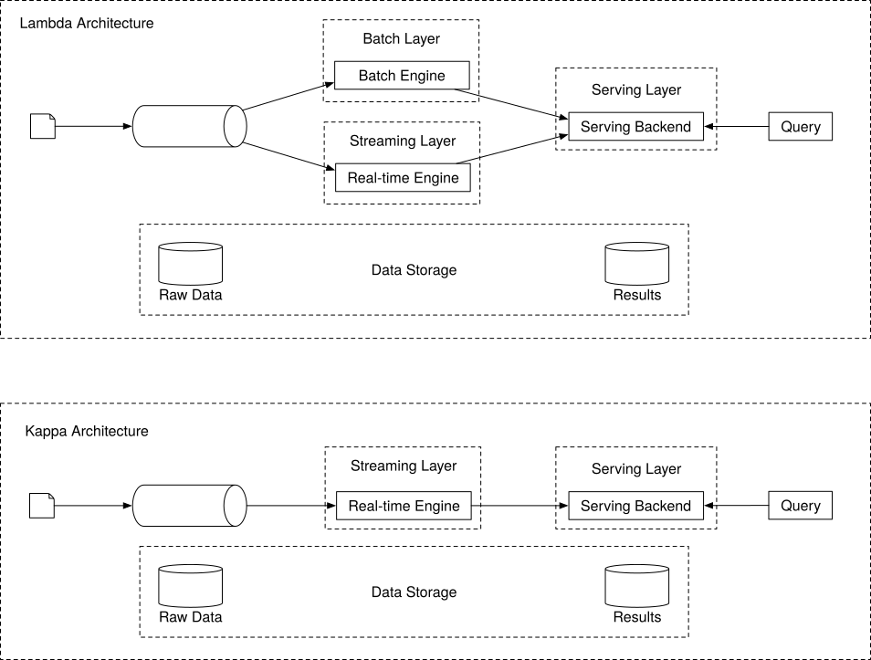
Figure 10 Lambda and Kappa architectures
Our high-level design uses Kappa architecture, where the reprocessing of historical data also goes through the real-time aggregation service. See the “Data recalculation” section below for details.
Data recalculation
Sometimes we have to recalculate the aggregated data, also called historical data replay. For example, if we discover a major bug in the aggregation service, we would need to recalculate the aggregated data from raw data starting at the point where the bug was introduced. Figure 11 shows the data recalculation flow:
-
The recalculation service retrieves data from raw data storage. This is a batched job.
-
Retrieved data is sent to a dedicated aggregation service so that the real-time processing is not impacted by historical data replay.
-
Aggregated results are sent to the second message queue, then updated in the aggregation database.
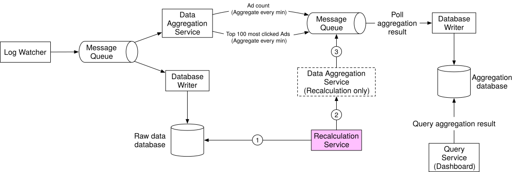
Figure 11 Recalculation service
The recalculation process reuses the data aggregation service but uses a different data source (the raw data).
Time¶
We need a timestamp to perform aggregation. The timestamp can be generated in two different places:
-
Event time: when an ad click happens.
-
Processing time: refers to the system time of the aggregation server that processes the click event.
Due to network delays and asynchronous environments (data go through a message queue), the gap between event time and processing time can be large. As shown in Figure 12, event 1 arrives at the aggregation service very late (5 hours later).
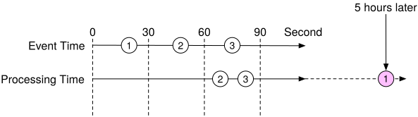
Figure 12 Late events
If event time is used for aggregation, we have to deal with delayed events. If processing time is used for aggregation, the aggregation result may not be accurate. There is no perfect solution, so we need to consider the trade-offs.
| Pros | Cons | |
|---|---|---|
| Event time | Aggregation results are more accurate because the client knows exactly when an ad is clicked | It depends on the timestamp generated on the client-side. Clients might have the wrong time, or the timestamp might be generated by malicious users |
| Processing time | Server timestamp is more reliable | The timestamp is not accurate if an event reaches the system at a much later time |
Table 18: Event time vs processing time
Since data accuracy is very important, we recommend using event time for aggregation. How do we properly process delayed events in this case? A technique called “watermark” is commonly utilized to handle slightly delayed events.
In Figure 13, ad click events are aggregated in the one-minute tumbling window (see the “Aggregation window” section for more details). If event time is used to decide whether the event is in the window, window 1 misses event 2, and window 3 misses event 5 because they arrive slightly later than the end of their aggregation windows.
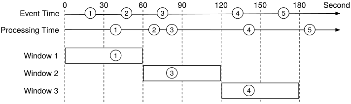
Figure 13 Miss events in an aggregation window
One way to mitigate this problem is to use “watermark” (the extended rectangles in Figure 14), which is regarded as an extension of an aggregation window. This improves the accuracy of the aggregation result. By extending an extra 15-second (adjustable) aggregation window, window 1 is able to include event 2, and window 3 is able to include event 5.
The value set for the watermark depends on the business requirement. A long watermark could catch events that arrive very late, but it adds more latency to the system. A short watermark means data is less accurate, but it adds less latency to the system.
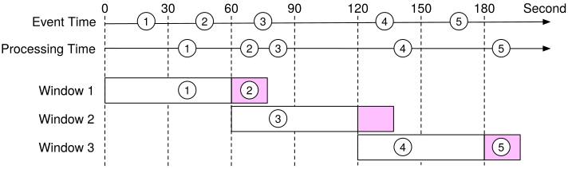
Figure 14 Watermark
Notice that the watermark technique does not handle events that have long delays. We can argue that it is not worth the return on investment (ROI) to have a complicated design for low probability events. We can always correct the tiny bit of inaccuracy with end-of-day reconciliation (see Reconciliation section). One trade-off to consider is that using watermark improves data accuracy but increases overall latency, due to extended wait time.
Aggregation window¶
According to the “Designing data-intensive applications” book by Martin Kleppmann [16], there are four types of window functions: tumbling (also called fixed) window, hopping window, sliding window, and session window. We will discuss the tumbling window and sliding window as they are most relevant to our system.
In the tumbling window (highlighted in Figure 15), time is partitioned into same-length, non-overlapping chunks. The tumbling window is a good fit for aggregating ad click events every minute (use case 1).
Figure 15 Tumbling window
In the sliding window (highlighted in Figure 16), events are grouped within a window that slides across the data stream, according to a specified interval. A sliding window can be an overlapping one. This is a good strategy to satisfy our second use case; to get the top N most clicked ads during the last M minutes.
Figure 16 Sliding window
Delivery guarantees¶
Since the aggregation result is utilized for billing, data accuracy and completeness are very important. The system needs to be able to answer questions such as:
-
How to avoid processing duplicate events?
-
How to ensure all events are processed?
Message queues such as Kafka usually provide three delivery semantics: at-most once, at-least once, and exactly once.
Which delivery method should we choose?
In most circumstances, at-least once processing is good enough if a small percentage of duplicates are acceptable.
However, this is not the case for our system. Differences of a few percent in data points could result in discrepancies of millions of dollars. Therefore, we recommend exactly-once delivery for the system. If you are interested in learning more about a real-life ad aggregation system, take a look at how Yelp implements it [17].
Data deduplication¶
One of the most common data quality issues is duplicated data. Duplicated data can come from a wide range of sources and in this section, we discuss two common sources.
-
Client-side. For example, a client might resend the same event multiple times. Duplicated events sent with malicious intent are best handled by ad fraud/risk control components. If this is of interest, please refer to the reference material [18].
-
Server outage. If an aggregation service node goes down in the middle of aggregation and the upstream service hasn’t yet received an acknowledgment, the same events might be sent and aggregated again. Let’s take a closer look.
Figure 17 shows how the aggregation service node (Aggregator) outage introduces duplicate data. The Aggregator manages the status of data consumption by storing the offset in upstream Kafka.
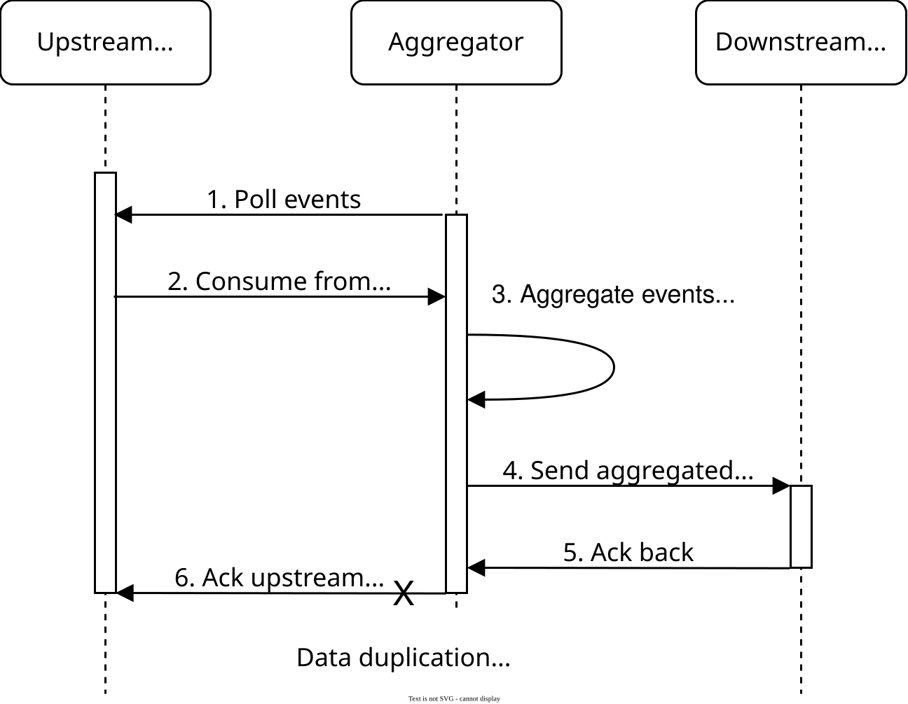
Figure 17 Duplicate data
If step 6 fails, perhaps due to Aggregator outage, events from 100 to 110 are already sent to the downstream, but the new offset 110 is not persisted in upstream Kafka. In this case, a new Aggregator would consume again from offset 100, even if those events are already processed, causing duplicate data.
The most straightforward solution (Figure 18) is to use external file storage, such as HDFS or S3, to record the offset. However, this solution has issues as well.
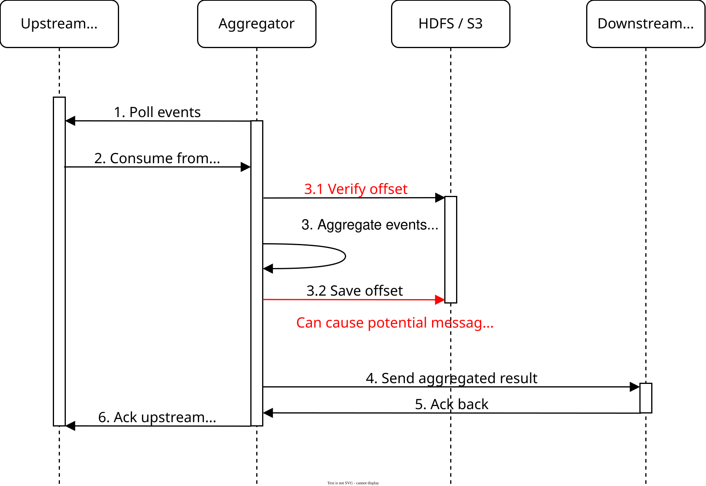
Figure 18 Record the offset
In step 3, the aggregator will process events from offset 100 to 110, only if the last offset stored in external storage is 100. If the offset stored in the storage is 110, the aggregator ignores events before offset 110.
But this design has a major problem: the offset is saved to HDFS / S3 (step 3.2) before the aggregation result is sent downstream. If step 4 fails due to Aggregator outage, events from 100 to 110 will never be processed by a newly brought up aggregator node, since the offset stored in external storage is 110.
To avoid data loss, we need to save the offset once we get an acknowledgment back from downstream. The updated design is shown in Figure 19.
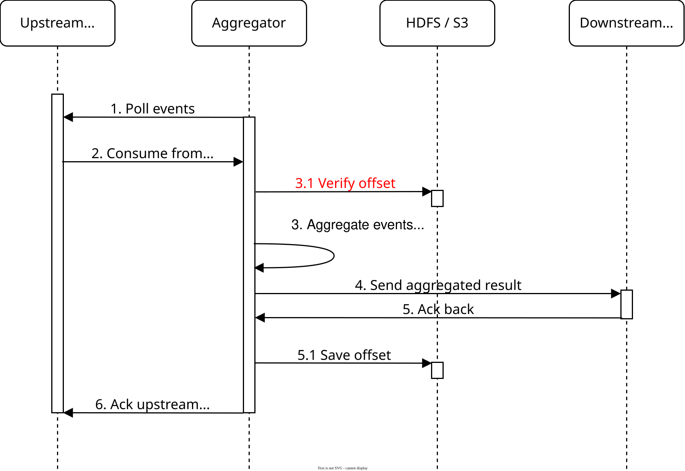
Figure 19 Save offset after receiving ack
In this design, if the Aggregator is down before step 5.1 is executed, events from 100 to 110 will be sent downstream again. To achieve “exactly-once” processing, we need to put operations between step 4 to step 6 in one distributed transaction. A distributed transaction is a transaction that works across several nodes. If any of the operations fails, the whole transaction is rolled back.
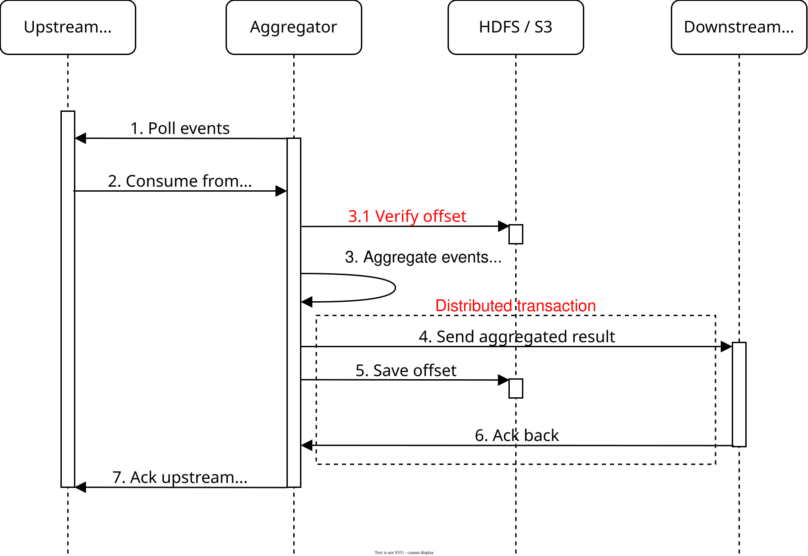
Figure 20 Distributed transaction
As you can see, it’s not easy to dedupe data in large-scale systems. How to achieve exactly-once processing is an advanced topic. If you are interested in the details, please refer to reference material [19].
Scale the system¶
From the back-of-the-envelope estimation, we know the business grows 30% per year, which doubles traffic every 3 years. How do we handle this growth? Let’s take a look.
Our system consists of three independent components: message queue, aggregation service, and database. Since these components are decoupled, we can scale each one independently.
Scale the message queue¶
We have already discussed how to scale the message queue extensively in the “Distributed Message Queue” chapter, so we’ll only briefly touch on a few points.
Producers. We don’t limit the number of producer instances, so the scalability of producers can be easily achieved.
Consumers. Inside a consumer group, the rebalancing mechanism helps to scale the consumers by adding or removing nodes. As shown in Figure 21, by adding two more consumers, each consumer only processes events from one partition.
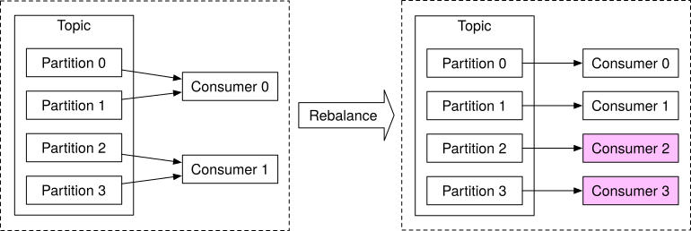
Figure 21 Add consumers
When there are hundreds of Kafka consumers in the system, consumer rebalance can be quite slow and could take a few minutes or even more. Therefore, if more consumers need to be added, try to do it during off-peak hours to minimize the impact.
Brokers
- Hashing key
Using ad_id as hashing key for Kafka partition to store events from the same ad_id in the same Kafka partition. In this case, an aggregation service can subscribe to all events of the same ad_id from one single partition.
- The number of partitions
If the number of partitions changes, events of the same ad_id might be mapped to a different partition. Therefore, it’s recommended to pre-allocate enough partitions in advance, to avoid dynamically increasing the number of partitions in production.
- Topic physical sharding
One single topic is usually not enough. We can split the data by geography (topic_north_america, topic_europe, topic_asia, etc.,) or by business type (topic_web_ads, topic_mobile_ads, etc).
-
Pros: Slicing data to different topics can help increase the system throughput. With fewer consumers for a single topic, the time to rebalance consumer groups is reduced.
-
Cons: It introduces extra complexity and increases maintenance costs.
Scale the aggregation service¶
In the high-level design, we talked about the aggregation service being a map/reduce operation. Figure 22 shows how things are wired together.
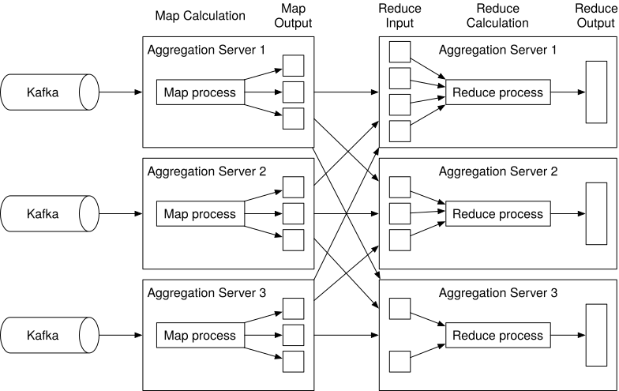
Figure 22 Aggregation service
If you are interested in the details, please refer to reference material [20]. Aggregation service is horizontally scalable by adding or removing nodes. Here is an interesting question; how do we increase the throughput of the aggregation service? There are two options.
Option 1: Allocate events with different ad_ids to different threads, as shown in Figure 23.
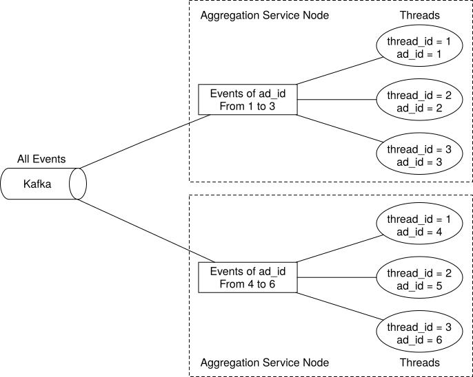
Figure 23 Multi-threading
Option 2: Deploy aggregation service nodes on resource providers like Apache Hadoop YARN [21]. You can think of this approach as utilizing multi-processing.
Option 1 is easier to implement and doesn’t depend on resource providers. In reality, however, option 2 is more widely used because we can scale the system by adding more computing resources.
Scale the database¶
Cassandra natively supports horizontal scaling, in a way similar to consistent hashing.
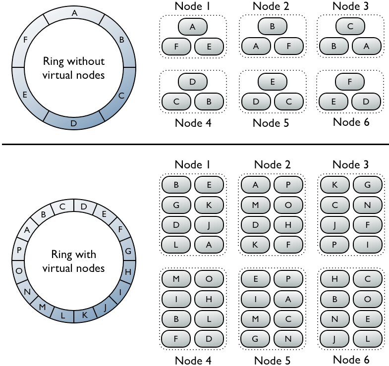
Figure 24 Virtual nodes [22]
Data is evenly distributed to every node with a proper replication factor. Each node saves its own part of the ring based on hashed value and also saves copies from other virtual nodes.
If we add a new node to the cluster, it automatically rebalances the virtual nodes among all nodes. No manual resharding is required. See Cassandra’s official documentation for more details [22].
Hotspot issue¶
A shard or service that receives much more data than the others is called a hotspot. This occurs because major companies have advertising budgets in the millions of dollars and their ads are clicked more often. Since events are partitioned by ad_id, some aggregation service nodes might receive many more ad click events than others, potentially causing server overload.
This problem can be mitigated by allocating more aggregation nodes to process popular ads. Let’s take a look at an example as shown in Figure 25. Assume each aggregation node can handle only 100 events.
-
Since there are 300 events in the aggregation node (beyond the capacity of a node can handle), it applies for extra resources through the resource manager.
-
The resource manager allocates more resources (for example, add two more aggregation nodes) so the original aggregation node isn’t overloaded.
-
The original aggregation node split events into 3 groups and each aggregation node handles 100 events.
-
The result is written back to the original aggregate node.
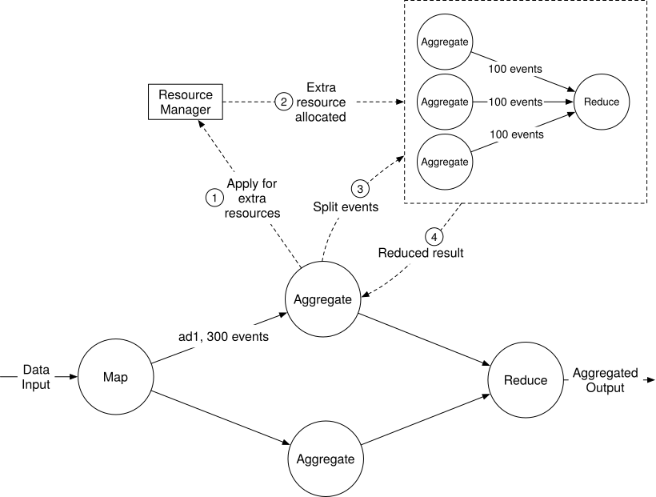
Figure 25 Allocate more aggregation nodes
There are more sophisticated ways to handle this problem, such as Global-Local Aggregation or Split Distinct Aggregation. For more information, please refer to [23].
Fault tolerance¶
Let’s discuss the fault tolerance of the aggregation service. Since aggregation happens in memory, when an aggregation node goes down, the aggregated result is lost as well. We can rebuild the count by replaying events from upstream Kafka brokers.
Replaying data from the beginning of Kafka is slow. A good practice is to save the “system status” like upstream offset to a snapshot and recover from the last saved status. In our design, the “system status” is more than just the upstream offset because we need to store data like top N most clicked ads in the past M minutes.
Figure 26 shows a simple example of what the data looks like in a snapshot.
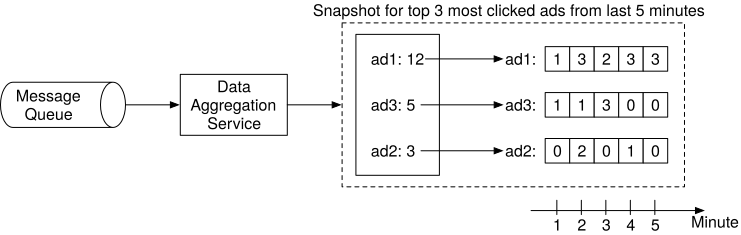
Figure 26 Data in a snapshot
With a snapshot, the failover process of the aggregation service is quite simple. If one aggregation service node fails, we bring up a new node and recover data from the latest snapshot (Figure 27). If there are new events that arrive after the last snapshot was taken, the new aggregation node will pull those data from the Kafka broker for replay.
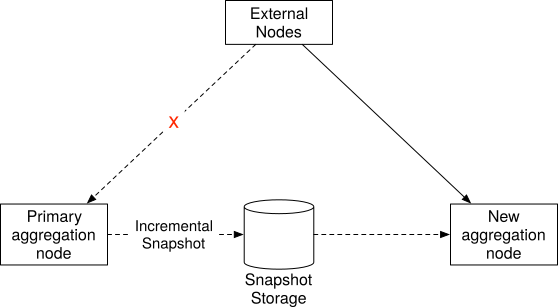
Figure 27 Aggregation node failover
Data monitoring and correctness¶
As mentioned earlier, aggregation results can be used for RTB and billing purposes. It’s critical to monitor the system’s health and to ensure correctness.
Continuous monitoring¶
Here are some metrics we might want to monitor:
-
Latency. Since latency can be introduced at each stage, it’s invaluable to track timestamps as events flow through different parts of the system. The differences between those timestamps can be exposed as latency metrics.
-
Message queue size. If there is a sudden increase in queue size, we may need to add more aggregation nodes. Notice that Kafka is a message queue implemented as a distributed commit log, so we need to monitor the records-lag metrics instead.
-
System resources on aggregation nodes: CPU, disk, JVM, etc.
Reconciliation¶
Reconciliation means comparing different sets of data in order to ensure data integrity. Unlike reconciliation in the banking industry, where you can compare your records with the bank’s records, the result of ad click aggregation has no third-party result to reconcile with.
What we can do is to sort the ad click events by event time in every partition at the end of the day, by using a batch job and reconciling with the real-time aggregation result. If we have higher accuracy requirements, we can use a smaller aggregation window; for example, one hour. Please note, no matter which aggregation window is used, the result from the batch job might not match exactly with the real-time aggregation result, since some events might arrive late (see Time section).
Figure 28 shows the final design diagram with reconciliation support.
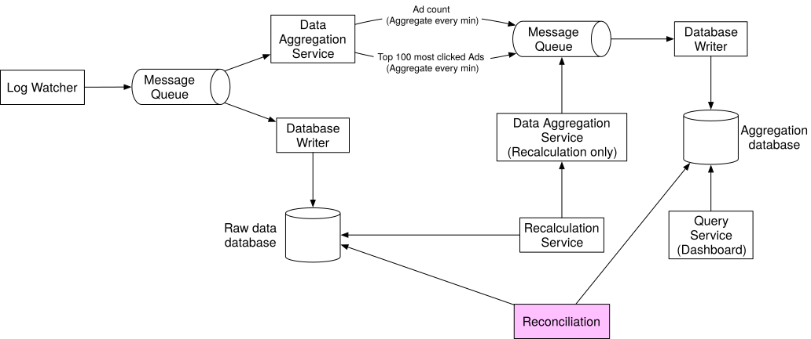
Figure 28 Final design
Alternative design¶
In a generalist system design interview, you are not expected to know the internals of different pieces of specialized software used in a big data pipeline. Explaining your thought process and discussing trade-offs is very important, which is why we propose a generic solution. Another option is to store ad click data in Hive, with an ElasticSearch layer built for faster queries. Aggregation is usually done in OLAP databases such as ClickHouse [24] or Druid [25]. Figure 29 shows the architecture.
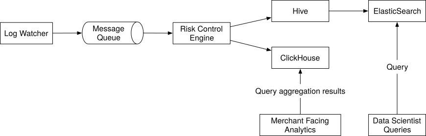
Figure 29 Alternative design
For more detail on this, please refer to reference material [26].
Step 4 - Wrap Up¶
In this chapter, we went through the process of designing an ad click event aggregation system at the scale of Facebook or Google. We covered:
-
Data model and API design.
-
Use MapReduce paradigm to aggregate ad click events.
-
Scale the message queue, aggregation service, and database.
-
Mitigate hotspot issue.
-
Monitor the system continuously.
-
Use reconciliation to ensure correctness.
-
Fault tolerance.
The ad click event aggregation system is a typical big data processing system. It will be easier to understand and design if you have prior knowledge or experience with industry-standard solutions such as Apache Kafka, Apache Flink, or Apache Spark.
Congratulations on getting this far! Now give yourself a pat on the back. Good job!
Chapter Summary¶
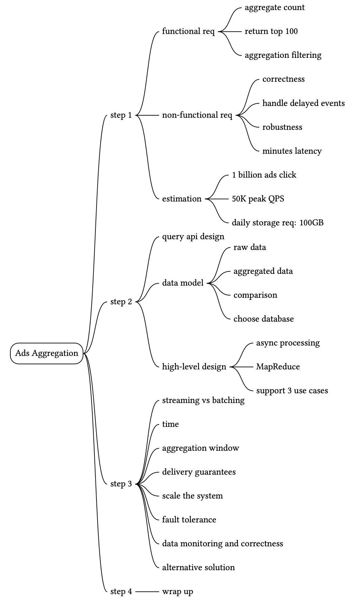
Reference Materials¶
[1] Clickthrough rate (CTR): Definition: https://support.google.com/google-ads/answer/2615875?hl=en
[2] Conversion rate: Definition: https://support.google.com/google-ads/answer/2684489?hl=en
[3] OLAP functions:
https://docs.oracle.com/database/121/OLAXS/olap_functions.htm#OLAXS169
[4] Display Advertising with Real-Time Bidding (RTB) and Behavioural Targeting:
https://arxiv.org/pdf/1610.03013.pdf
[5] LanguageManual ORC:
https://cwiki.apache.org/confluence/display/hive/languagemanual+orc
[6] Parquet: https://databricks.com/glossary/what-is-parquet
[7] What is avro: https://www.ibm.com/topics/avro
[8] Big Data: https://www.datakwery.com/techniques/big-data/
[9] DAG model https://en.wikipedia.org/wiki/Directed_acyclic_graph
[10] Java stream: https://docs.oracle.com/javase/8/docs/api/java/util/stream/Stream.html
[11] Understand star schema and the importance for Power BI:
https://docs.microsoft.com/en-us/power-bi/guidance/star-schema
[12] Martin Kleppmann, “Designing Data-Intensive Applications”, 2017
[13] Apache Flink: https://flink.apache.org/
[14] Lambda architecture: https://databricks.com/glossary/lambda-architecture
[15] Kappa architecture: https://hazelcast.com/glossary/kappa-architecture/
[16] Martin Kleppmann, “Stream Processing, Designing Data-Intensive Applications”, 2017
[17] End-to-end Exactly-once Aggregation Over Ad Streams:
https://www.youtube.com/watch?v=hzxytnPcAUM
[18] Ad traffic quality: https://www.google.com/ads/adtrafficquality
[19] An Overview of End-to-End Exactly-Once Processing in Apache Flink:
https://flink.apache.org/features/2018/03/01/end-to-end-exactly-once-apache-flink.html
[20] Understanding MapReduce in Hadoop: https://www.section.io/engineering-education/understanding-map-reduce-in-hadoop/
[21] Flink on Apache Yarn
[22] How data is distributed across a cluster (using virtual nodes):
[23] Flink performance tuning:
https://nightlies.apache.org/flink/flink-docs-master/docs/dev/table/tuning/
[24] ClickHouse: https://clickhouse.com/
[25] Druid: https://druid.apache.org/
[26] Real-Time Exactly-Once Ad Event Processing with Apache Flink, Kafka, and Pinot:
https://eng.uber.com/real-time-exactly-once-ad-event-processing/